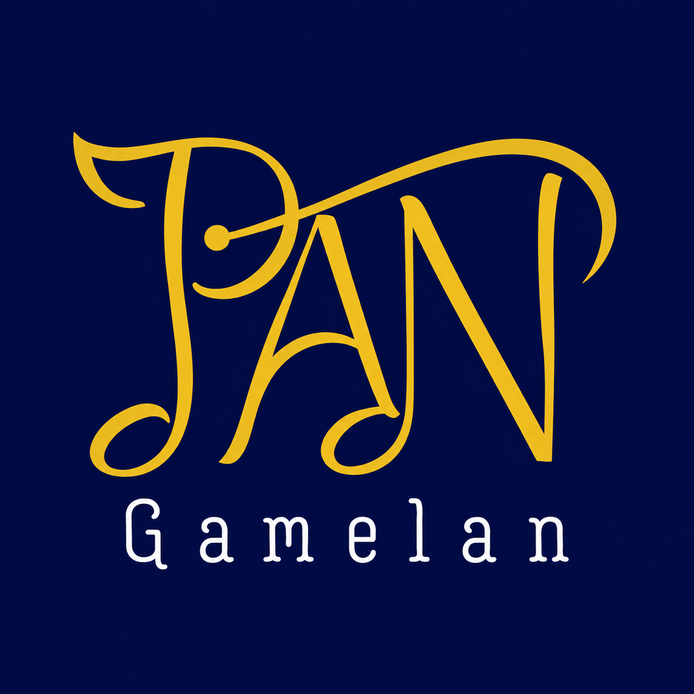

Saron Barung
Instrumen melodi pokok berbilah perunggu dengan register tengah yang lantang.
Geser bilah ke kanan/kiri untuk melihat seluruh nada

Instrumen melodi pokok berbilah perunggu dengan register tengah yang lantang.
Putar layar ponsel Anda ke posisi mendatar (landscape) sebelum bermain agar seluruh bilah & pencon gamelan tampil penuh tanpa perlu menggeser.